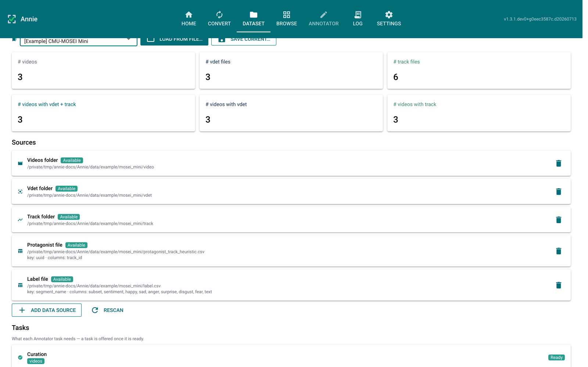
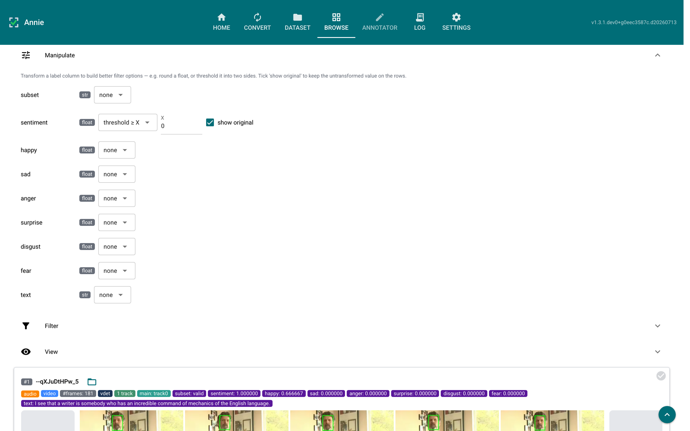
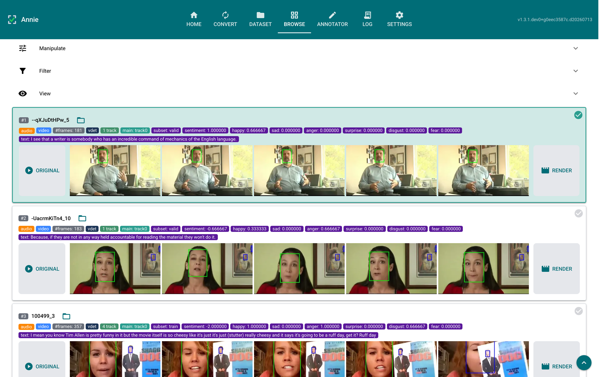
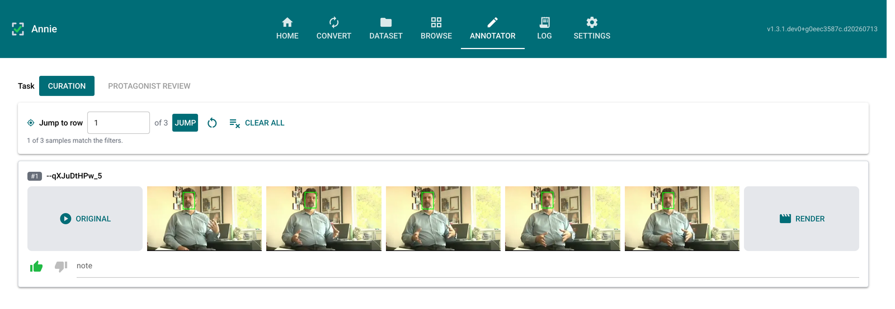

Playbook — Dataset, Browse & Curation¶
This playbook follows a reviewer from defining a dataset, through finding the interesting samples in Browse, to supervising them in the Annotator. It reflects the separation Annie enforces: Browse is a read-only viewer that only selects; all supervision (verdicts, notes, protagonist corrections) happens in the Annotator.
Every screenshot below is the real UI, captured against the bundled
[Example] CMU-MOSEI Mini config — so you can reproduce each screen by picking that
config from the Dataset tab.
Step 1 — Define the dataset on the Dataset tab¶
A dataset is an ordered list of data sources, not a fixed set of folders. Pick a config from the selector (or build one with Add data source); adding or removing a source re-scans in place, so the metrics update immediately.

What to notice:
Metric cards summarise the scan: videos, vdet files, track files, and how many videos have each annotation.
Each source card shows an Available / Unavailable chip and, for CSVs, the key column and the value columns it contributes.
The Tasks panel below (scrolled off here) lists what each Annotator task needs and whether it is Ready — a task is offered in the Annotator exactly when it is ready here.
Persistence pins the review database. A saved config owns an
annie_<name>.dbunderANNIE_HOME, so reloading the config reopens the same decisions.
Step 2 — Reshape label columns with Manipulate¶
Raw label columns are not always the ones you want to filter on. The Manipulate panel derives a filterable view of a column without touching the underlying data — round a float, or threshold it into two sides.

What to notice:
Each row is
column · type · transform, with the detected type as a badge. The available transforms depend on that type.Here
sentiment(a float in[-3, 3]) is set to threshold ≥ X withX = 0, turning a continuous column into a clean two-way filter facet.show original keeps the untransformed value on the sample rows — note the row below still reads
sentiment: 1.000000. The transform drives the filter; this checkbox decides only what is displayed, so you can filter on≥ 0and still read the real number.Manipulate, Filter, and View form one accordion — opening one closes the others, so the sample rows are never pushed off screen.
Step 3 — Select the samples you want to supervise¶
Browse lists one row per video. Clicking the top-right corner of a row selects it for the Annotator; nothing else on the row toggles selection, so playing a video or opening the reveal menu never queues it by accident.

What to notice:
The selected row (#1) carries a teal border, a lighter teal fill, and a solid ✓ in its corner. The unselected rows show a faint tick — the affordance that says “click here” — which brightens on hover.
Browse carries no like/dislike or note controls. The only state a click writes is “queued for the Annotator.”
Each row shows its label tags, a lazy ORIGINAL placeholder that embeds the video on click, the five-frame strip with the protagonist track boxed in green, and a RENDER box.
The verdict / note filters remain, so you can still narrow by curation gathered elsewhere; Browse just no longer sets it.
Add all filtered to Annotator queues the whole filtered list in one click.
Step 4 — Curate the queued videos in the Annotator¶
Switch to the Annotator and pick the Curation task. It shows the queued videos with the like/dislike verdict and a free-text note — the supervision that used to live on Browse rows. Every video is liked by default until you disagree; each change saves to the review database immediately.

What to notice:
Each row mirrors a Browse row — ORIGINAL, five frames, RENDER — at a slightly smaller scale, leaving room for the review controls beneath it.
Task at the top offers only the ready tasks. Here that is Curation and Protagonist review; Segment review is absent because this config has no segmentation CSV.
The toolbar carries Jump to row, a reset, and Clear all — the dataset-wide actions, kept together and away from the per-row controls.
Which tasks appear is driven by the sources present on the Dataset tab:
Curation — needs only a videos folder.
Protagonist review — needs a protagonist CSV.
Segment review — needs a segmentation CSV (see the Segment-review playbook).
Why the split¶
Keeping Browse read-only and consolidating supervision under the Annotator means each sample’s judgements have a single home (the review database), and a reviewer always knows which surface collects input versus which one just presents it. Selection is routing, not supervision — so it stays in Browse.
Where this lives in the code¶
Concern |
Module |
|---|---|
Source registry, task readiness |
|
Config save/load, per-config database |
|
Label transforms (round, threshold) |
|
Filter predicates |
|
Read-only rows + corner selection |
|
Task switch, Curation task |
|
Verdict / note / selection persistence |